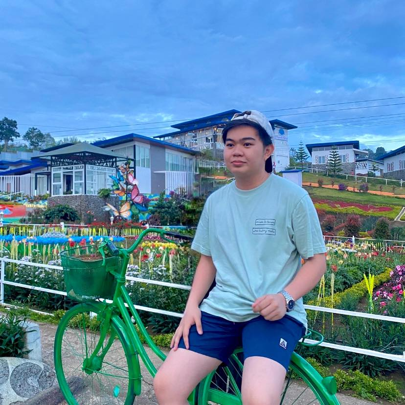

About Me

My name is Kert Cain Arvie P. Abajo, and I am 19 years old, currently a second-year student at the University of the Immaculate Conception (UIC). I am deeply committed to my studies and enjoy the academic challenges that come with my education. Outside of my academic life, I am passionate about basketball, video games, and singing, which all contribute to my personal growth and enjoyment. Balancing these interests with my academic responsibilities is important to me, and I strive to make the most of my time at UIC. Looking forward, I am excited about the opportunities and experiences that lie ahead.